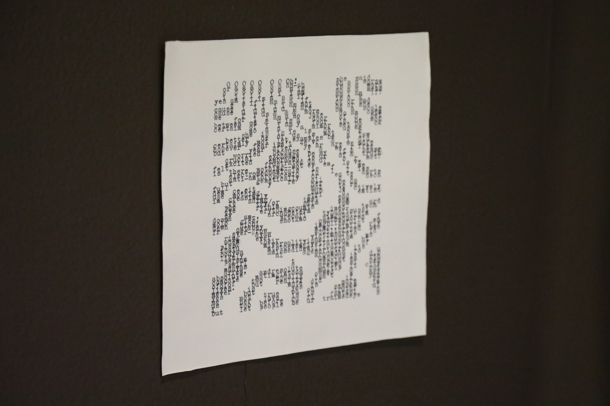
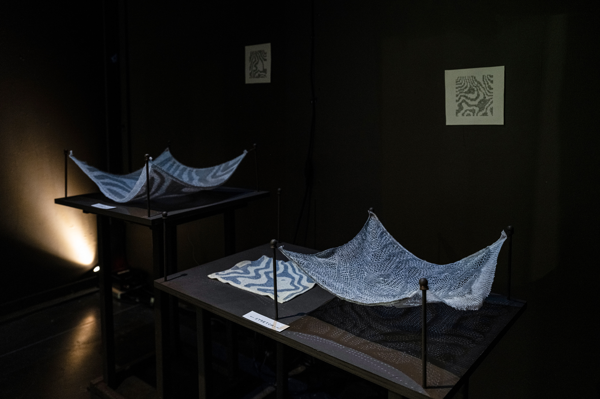
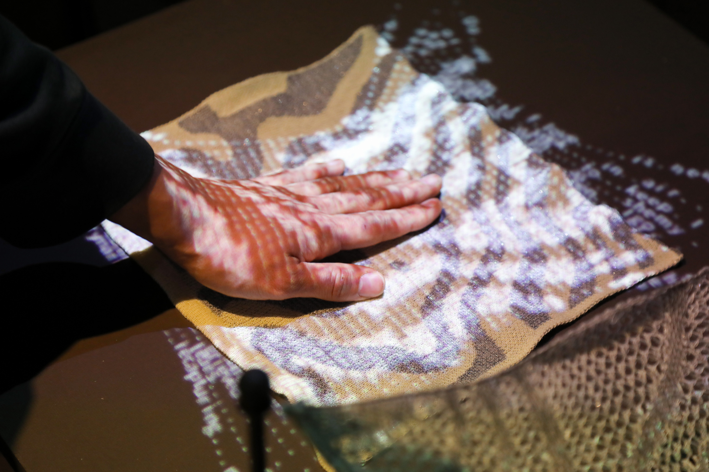
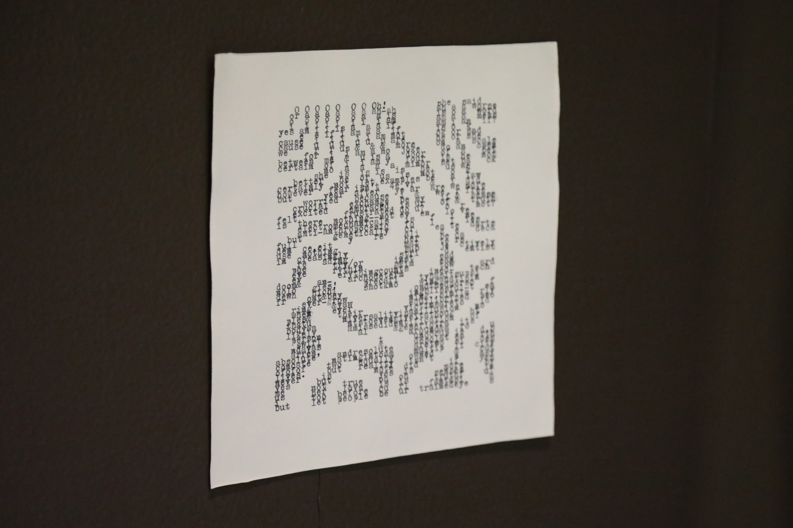

Back
Patterned
Language
Mar 2024 - ongoing
Fabrics knitted with conductive, wool, cotton, and polyester yarns, bespoke software, microcontroller, projector, speaker, custom pedestal.
Variable sizes
Collborated with Yutong Li, RISD MFA Textiles 25’
Patterned Language is a collaborative project between textile
artists, poets, and writers. The process starts from a set of instructions–which generates patterns and
drives the creation of poems–and the output then gets materialized with machine knitting techniques and
a typewriter. When the knitted fabrics are touched, projection of the poems will be activated in
the form of a digital knit.




